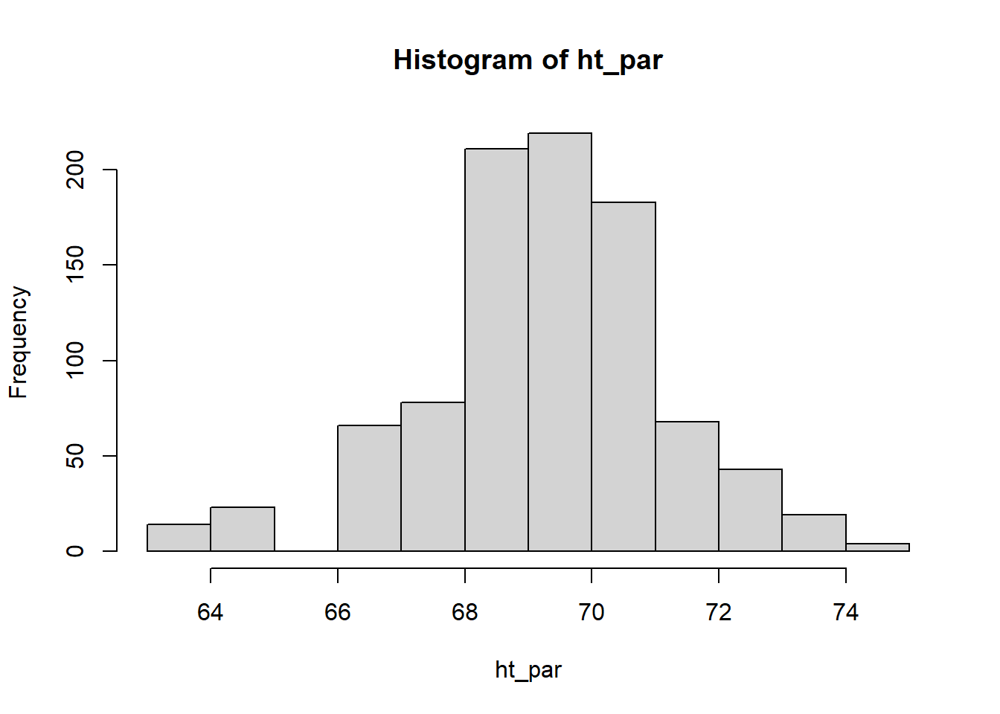
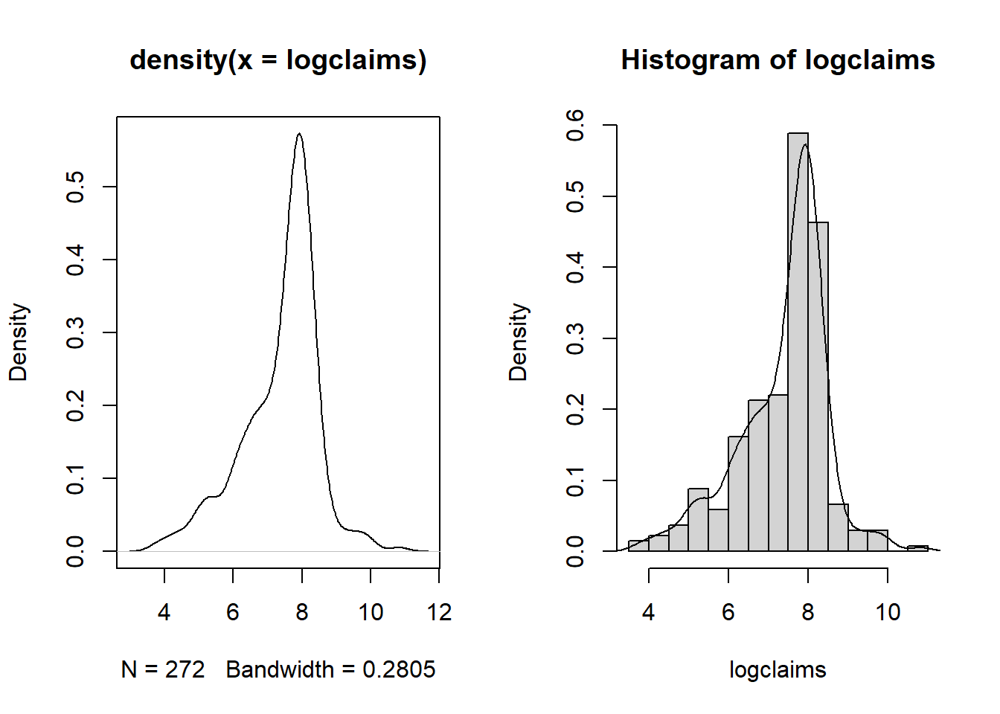
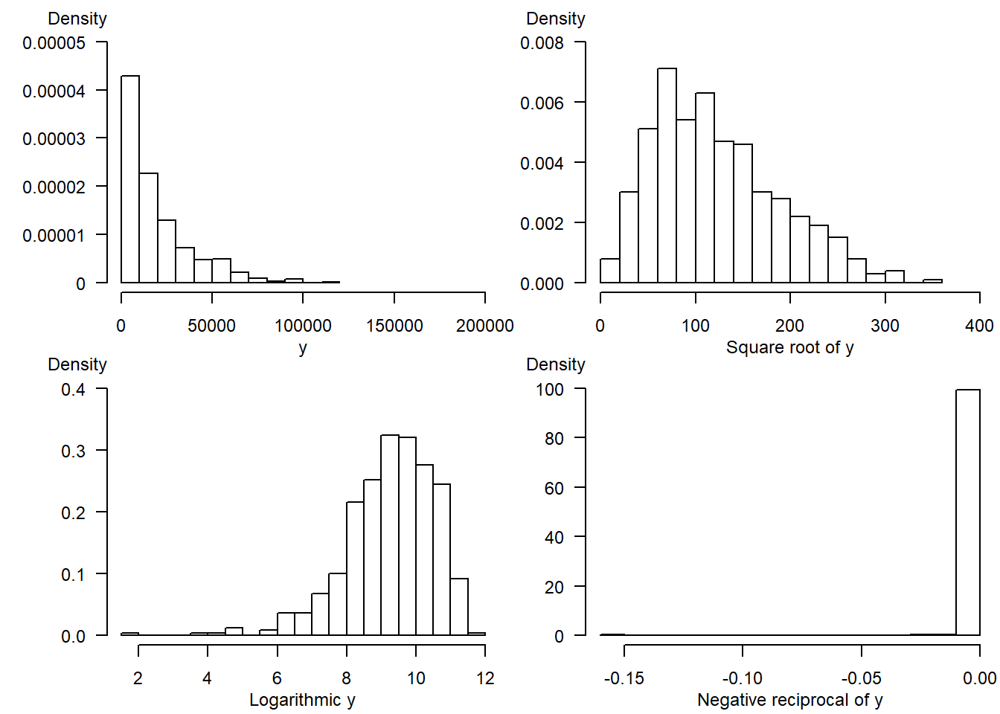

Chapter 1 Regression and the Normal Distribution
Chapter description
Regression analysis is a statistical method that is widely used in many fields of study, with actuarial science being no exception. This chapter introduces the role of the normal distribution in regression and the use of logarithmic transformations in specifying regression relationships.
1.1 Fitting a normal distribution
In this section, you learn how to:
- Calculate and interpret two basic summary statistics
- Fit a data set to a normal curve
- Calculate probabilities under a standard normal curve
1.1.1 Video
1.1.1.1 Video Overhead Details
1.1.1.1.1 Show Overhead A Details. Description of the data
To illustrate a data set that can be analyzed using regression methods, we consider some data included in Galton’s 1885 paper. These data include the heights of 928 adult children (child_ht), together with an index of their parents’ height (parent_ht). Here, all female heights were multiplied by 1.08, and the index was created by taking the average of the father’s height and rescaled mother’s height. Galton was aware that the parents’ and the adult child’s height could each be adequately approximated by a normal curve. In developing regression analysis, he provided a single model for the joint distribution of heights.
heights <- read.csv("CSVData\\galton_height.csv", header = TRUE)
#heights <- read.csv("https://assets.datacamp.com/production/repositories/2610/datasets/c85ede6c205d22049e766bd08956b225c576255b/galton_height.csv", header = TRUE)
plot(jitter(heights$parent_ht),jitter(heights$child_ht), ylim = c(60,80), xlim = c(60,80),
ylab = "height of child", xlab = "height of parents")
abline(lm(heights$child_ht~heights$parent_ht))
abline(0,1,col = "red")1.1.1.1.2 Show Overhead B Details. Read and examine data structure
The data has already been read into a dataset called heights. Examine the structure of the data with the function str() and use the head() command to looks at the first few records.
heights <- read.csv("CSVData\\galton_height.csv",header = TRUE)
#heights <- read.csv("https://assets.datacamp.com/production/repositories/2610/datasets/c85ede6c205d22049e766bd08956b225c576255b/galton_height.csv", header = TRUE)
str(heights)
head(heights)'data.frame': 928 obs. of 2 variables:
$ child_ht : num 72.2 73.2 73.2 73.2 68.2 ...
$ parent_ht: num 74.5 74.5 74.5 74.5 73.5 73.5 73.5 73.5 73.5 73.5 ...
child_ht parent_ht
1 72.2 74.5
2 73.2 74.5
3 73.2 74.5
4 73.2 74.5
5 68.2 73.5
6 69.2 73.51.1.1.1.3 Show Overhead C Details. Summary stats for parents’ height
Next, examine the distribution of the child’s height and then examine the distribution of the parents height.
ht_par <- heights$parent_ht
hist(ht_par)
mean(ht_par)
sd(ht_par)[1] 69.26293
[1] 1.9122741.1.1.1.4 Show Overhead D. Fit a normal curve to parents’ height details
(mparent <- mean(ht_par))
(sdparent <- sd(ht_par))
x <- seq(60, 80,by = 0.1)
hist(ht_par, freq = FALSE)
lines(x, dnorm(x, mean = mparent, sd = sdparent), col = "blue")
[1] 69.26293
[1] 1.9122741.1.1.1.5 Show Overhead E Details. Use the normal approximation to determine the probability of the height of tall parents
TallHeight <- 72
pnorm(TallHeight, mean = mparent, sd = sdparent)
pnorm(72, mean = mean(ht_par), sd = sd(ht_par))
(StdUnitsTallHeight <- (TallHeight - mparent)/sdparent)
pnorm(StdUnitsTallHeight, mean = 0, sd = 1)[1] 0.9238302
[1] 0.9238302
[1] 1.431317
[1] 0.92383021.1.2 Exercise. Fitting Galton’s height data
Assignment Text
The Galton data has already been read into a dataframe called heights. These data include the heights of 928 adult children child_ht, together with an index of their parents’ height parent_ht. The video explored the distribution of the parents’ height; in this assignment, we investigate the distribution of the heights of the adult children.
Instructions
- Define the height of an adult child as a global variable
- Use the function mean() to calculate the mean and the function sd() to calculate the standard deviation
- Use the normal approximation and the function pnorm() determine the probability that an adult child’s height is less than 72 inches
Hint. Remember that we can reference a variable, say var, from a data set such as heights, as heights$var.
1.1.3 Exercise. Visualizing child’s height distribution
Assignment Text
As in the prior exercise, from the Galton dataset heights, the heights of 928 adult children have been used to create a global variable called ht_child. We also have basic summary statistics, the mean height mchild and the standard deviation of heights in sdchild. In this exercise, we explore the fit of the normal curve to this distribution.
Instructions
- To visualize the distribution, use the function hist() to calculate the histogram. Use the
freq = FALSEoption to give a histogram with proportions instead of counts. - Use the function seq() to determine a sequence that can be used for plotting. Then, with the function lines(), superimpose a normal curve on the histogram
- Determine the probability that a child’s height is greater than 72 inches
Hint 1. Use the function dnorm() to calculate the normal density, similar to the cumulative probabilites that you calculated using pnorm()
Hint 2. To calculate probabilities greater that an amount, simply use 1 minus the cumulative probability
Pre-exercise code
1.2 Visualizing distributions
In this section, you learn how to:
- Calculate and interpret distributions using histograms
- Calculate and interpret distributions using density plots
1.2.1 Video
1.2.1.1 Video Overhead Details
1.2.1.1.1 Show Overhead Details. Data description
For our first look at an insurance data set, we consider data from Rempala and Derrig (2005). They considered claims arising from automobile bodily injury insurance coverages. These are amounts incurred for outpatient medical treatments that arise from automobile accidents, typically sprains, broken collarbones and the like. The data consists of a sample of 272 claims from Massachusetts that were closed in 2001 (by “closed,” we mean that the claim is settled and no additional liabilities can arise from the same accident). Rempala and Derrig were interested in developing procedures for handling mixtures of “typical” claims and others from providers who reported claims fraudulently. For this sample, we consider only those typical claims, ignoring the potentially fraudulent ones.
# Reformat Data Set
injury <- read.csv("CSVData\\MassBodilyInjury.csv",header = TRUE)
str(injury)
head(injury)
# PICK THE SUBSET OF THE DATA CORRESPONDING TO PROVIDER A
injury2 <- subset(injury, providerA ! = 0 )
injury2$claims <- 1000*injury2$claims
injury2$logclaims <- log(injury2$claims)
injury3 <- injury2[c("claims","logclaims")]
#write.csv(injury3,"CSVData\\MassBI.csv",row.names = FALSE)1.2.1.1.2 Show Overhead A Details. Bring in Data, Introduce Logarithmic Claims
injury <- read.csv("CSVData\\MassBI.csv",header = TRUE)
# CHECK THE NAMES, DIMENSION IN THE FILE AND LIST THE FIRST 8 OBSERVATIONS ;
str(injury)
head(injury)
attach(injury)
claims <- injury$claims
par(mfrow = c(1, 2))
hist(claims)
hist(logclaims)'data.frame': 272 obs. of 2 variables:
$ claims : int 45 47 70 75 77 92 117 117 140 145 ...
$ logclaims: num 3.81 3.85 4.25 4.32 4.34 ...
claims logclaims
1 45 3.806662
2 47 3.850148
3 70 4.248495
4 75 4.317488
5 77 4.343805
6 92 4.5217891.2.1.1.3 Show Overhead B Details. Show how to get a finer grid for histograms
par(mfrow = c(1, 2))
hist(logclaims)
hist(logclaims,breaks = 15)1.2.1.1.4 Show Overhead C Details. Introduce the density plot
par(mfrow = c(1, 2))
plot(density(logclaims))
hist(logclaims, breaks = 15,freq = FALSE)
lines(density(logclaims))
1.2.2 Exercise. Visualizing bodily injury claims with density plots
Assignment Text
In the prior video, you learned about the Massachusetts bodily injury dataset. This dataframe, injury, has been read in and the global variable claims has been created. This assignment reviews the hist() function for visualizing distributions and allows you to explore density plotting, a smoothed version of the histogram.
Instructions
- Use the function log() to create the logarithmic version of the claims variable
- Calculate a histogram of logarithmic with 40 bins using an option in the hist() function,
breaks =. - Create a density plot of logarithmic claims using the functions plot() and density().
- Repeat the density plot, this time using a more refined bandwidth equal to 0.03. Use an option in the density() function,
bw =.
1.3 Summarizing distributions
In this section, you learn how to:
- Calculate and interpret basic summary statistics
- Calculate and interpret distributions using boxplots
- Calculate and interpret distributions using qq plots
1.3.1 Video
1.3.1.1 Video Overhead Details
1.3.1.1.1 Show Overhead A Details. Summary statistics
injury <- read.csv("CSVData\\MassBI.csv",header = TRUE)
#injury <- read.csv("https://assets.datacamp.com/production/repositories/2610/datasets/8cca19d0503fcf6e9d30d9cb912de5ba95ecb9c1/MassBI.csv", header = TRUE)
attach(injury)
# SUMMARY STATISTICS
summary(injury)
sd(claims);sd(logclaims)
length(claims) claims logclaims
Min. : 45.0 Min. : 3.807
1st Qu.: 892.5 1st Qu.: 6.794
Median : 2210.0 Median : 7.701
Mean : 2697.7 Mean : 7.388
3rd Qu.: 3215.0 3rd Qu.: 8.076
Max. :50000.0 Max. :10.820
[1] 3944.445
[1] 1.10093
[1] 2721.3.1.1.2 Show Overhead B Details. Boxplot
# BASIC BOXPLOT
boxplot(logclaims)quantile(logclaims, probs = 0.75)
# BOXPLOT WITH ANNOTATION
boxplot(logclaims, main = "Boxplot of logclaims")
text(1, 7.6, "median", cex = 0.7)
text(1, 6.55, "25th percentile", cex = 0.7)
text(1, 7.95, "75th percentile", cex = 0.7)
arrows(1.05, 4.9, 1.05, 3.6, col = "blue", code = 3, angle = 20, length = 0.1)
text(1.1, 4.4, "outliers", cex = 0.7)
text(1.1, 10.9, "outlier", cex = 0.7) 75%
8.075579 1.3.1.1.3 Show Overhead C Details. QQ Plot
summary(injury)
quantile(claims, probs = 0.75)
quantile(logclaims, probs = 0.75)
log(quantile(claims, probs = 0.75))
qnorm(p = 0.75, mean = mean(logclaims), sd = sd(logclaims))
(qnorm(p = 0.75, mean = mean(logclaims), sd = sd(logclaims)) -mean(logclaims)) /
sd(logclaims)
qnorm(p = 0.75, mean = 0, sd = 1)
# QUANTILE - QUANTILE PLOT
qqnorm(logclaims)
qqline(logclaims) 
claims logclaims
Min. : 45.0 Min. : 3.807
1st Qu.: 892.5 1st Qu.: 6.794
Median : 2210.0 Median : 7.701
Mean : 2697.7 Mean : 7.388
3rd Qu.: 3215.0 3rd Qu.: 8.076
Max. :50000.0 Max. :10.820
75%
3215
75%
8.075579
75%
8.075583
[1] 8.131056
[1] 0.6744898
[1] 0.67448981.3.2 Exercise. Summarizing bodily injury claims with box and qq plots
Assignment Text
The Massachusetts bodily injury data has already been read and used to create the global variable claims representing bodily injury claims. The previous video showed how to present the distribution of logarithmic claims which appeared to be approximately normally distributed. However, users are not really interested in log dollars but want to know about a unit of measurement that is more intuitive, such as dollars.
So this assignment is based on claims, not the logarithmic version. You will use the functions boxplot() and qqnorm() to visualize the distribution through boxplots and quantile-quantile, or qq-, plots. But, because we are working with such a skewed distribution, do not be surprised that it is difficult to interpret these results readily.
Instructions
- Produce a box plot for claims
- Determine the 25th empirical percentile for claims using the quantile() function.
- Determine the 25th percentile for claims based on a normal distribution using the qnorm() function.
- Produce a normal qq plot for claims using the function qqnorm(). The qqline() function is handy for producing a reference line.
Hint. Note that qnorm() (one q) is for a normal quantile and qqnorm(). (two q’s!) is for the normal qq plot
1.3.3 Exercise. Effects on distributions of removing the largest claim
Assignment Text
The Massachusetts bodily injury dataframe injury has been read in; our focus is on the claims variable in that dataset.
In the previous exercise, we learned that the Massachusetts bodily injury claims distribution was not even close to approximately normal (as evidenced by the box and qq- plots). Non-normality may be induced by skewness (that we will handle via transformations in the next section). But, seeming non-normality can also be induced by one or two very large observations (called an outlier later in the course). So, this exercise examines the effects on the distribution of removing the largest claims.
Instructions
- Use the function tail() to examine the
injurydataset and identify the largest claim - Use the function subset() to create a subset omitting the largest claim
- Compare the summary statistics of the omitted claim distribution to the full distribution
- Compare the two distributions visually via histograms plotted next to another.
par(mfrow = c(1, 2))is used to organize the plots you create. Do not alter this code.
Hint. For this data set, the [subset()] argument claims < 25000 will keep all but the largest claim
1.4 Transformations
In this exercise, you learn how to:
- Symmetrize a skewed distribution using a logarithmic transformation
1.4.1 Video
1.4.1.1 Video Overhead Details
1.4.1.1.1 Show Overhead A Details. Simulate a moderately skewed distribution, with transforms
# FIGURE 1.7 - SIMULATE CHI-SQUARE, CREATE 3 TRANSFORMATIONS
set.seed(1237) # set the seed of the random number generator
# allows us to replicate results
X1 <- 10000*rchisq(500, df = 2) # generate variables randomly from a skewed distribution
X2 <- X1^(0.5) # square root transform, could also use sqrt(X1)
X3 <- log(X1) # logarithmic transform
X4 <- -1/X1 # negative reciprocal transform1.4.1.1.2 Show Overhead B Details. Visualize the distributions
par(mfrow = c(2, 2), cex = .75, mar = c(3,5,1.5,0))
hist(X1, freq = FALSE, nclass = 16, main = "", xlab = "", ylab = "",
las = 1, yaxt = "n",xlim = c(0,200000),ylim = c(0,.00005))
axis(2, at = seq(0,.00005,.00001),las = 1, cex = .3,
labels = c("0", "0.00001", "0.00002","0.00003", "0.00004", "0.00005"))
mtext("Density", side = 2, at = .000055, las = 1, cex = .75)
mtext("y", side = 1, cex = .75, line = 2)
par(mar = c(3,4,1.5,0.2))
hist(X2, freq = FALSE, nclass = 16, main = "", xlab = "", ylab = "",
las = 1,xlim = c(0,400), ylim = c(0,.008))
mtext("Density", side = 2, at = .0088, las = 1, cex = .75)
mtext("Square root of y", side = 1, cex = .75, line = 2)
par(mar = c(3.2,5,1,0))
hist(X3, freq = FALSE, nclass = 16, main = "", xlab = "", ylab = "", las = 1, ylim = c(0,.4))
mtext("Density", side = 2, at = .44, las = 1, cex = .75)
mtext("Logarithmic y", side = 1, cex = .75, line = 2)
par(mar = c(3.2,4,1,0.2))
hist(X4, freq = FALSE, nclass = 16, main = "",xlab = "", ylab = "", las = 1, ylim = c(0,100))
mtext("Density", side = 2, at = 110, las = 1, cex = .75)
mtext("Negative reciprocal of y", side = 1, cex = .75, line = 2)
1.4.2 Exercise. Distribution of transformed bodily injury claims
Assignment Text
We have now examined the distributions of bodily injury claims and its logarithmic version. Grudgingly, we have concluded that to fit a normal curve the logarithmic version of claims is a better choice (again, we really do not like log dollars but you’ll get used to it in this course). But, why logarithmic and not some other transformations?
A partial response to this question will appear in later chapters when we describe interpretation of regression coefficients. Another partial response is that the log transform seems to work well with skewed insurance data sets, as we demonstrate visually in this exercise.
Instructions
Use the code par(mfrow = c(2, 2)) so that four graphs appear in a 2 by 2 matrix format for easy comparisons. Plot the density() of
- claims
- square root of claims
- logarithmic claims
- negative reciprocal of claims
Hint. For negative reciprocal claims, use plot(density(-claims^(-1)))